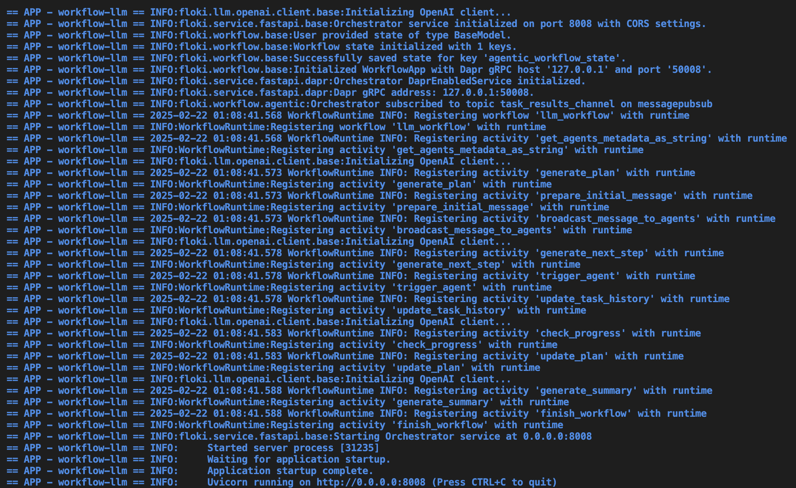
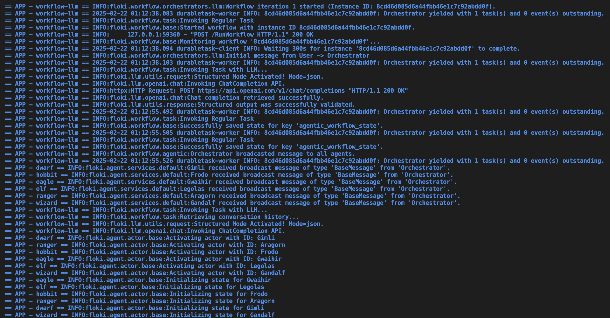
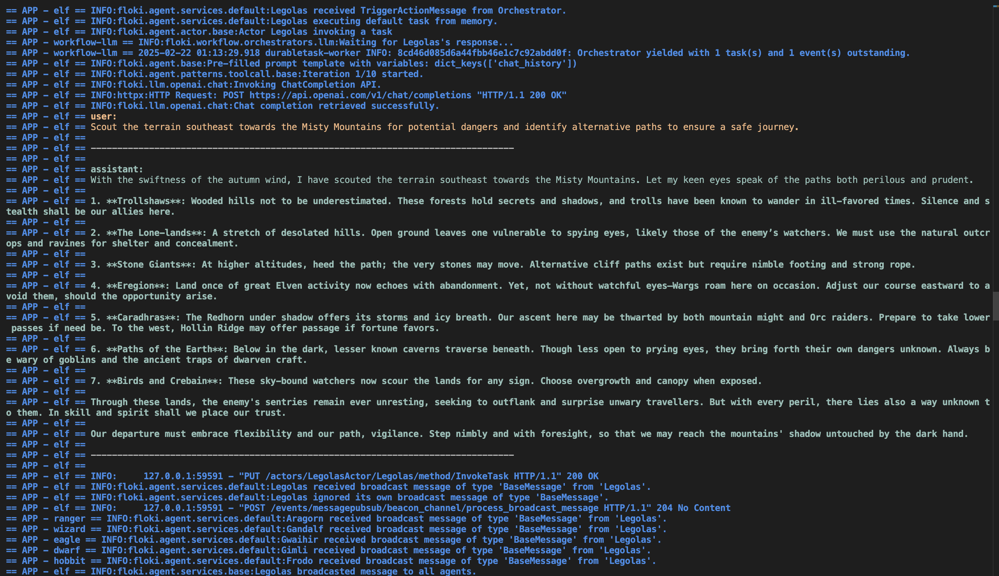
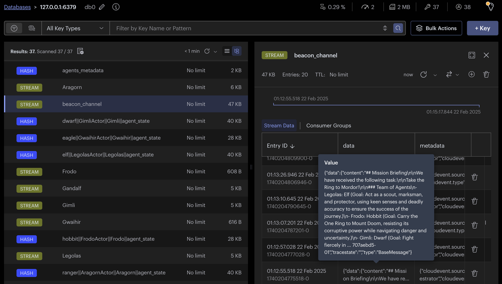
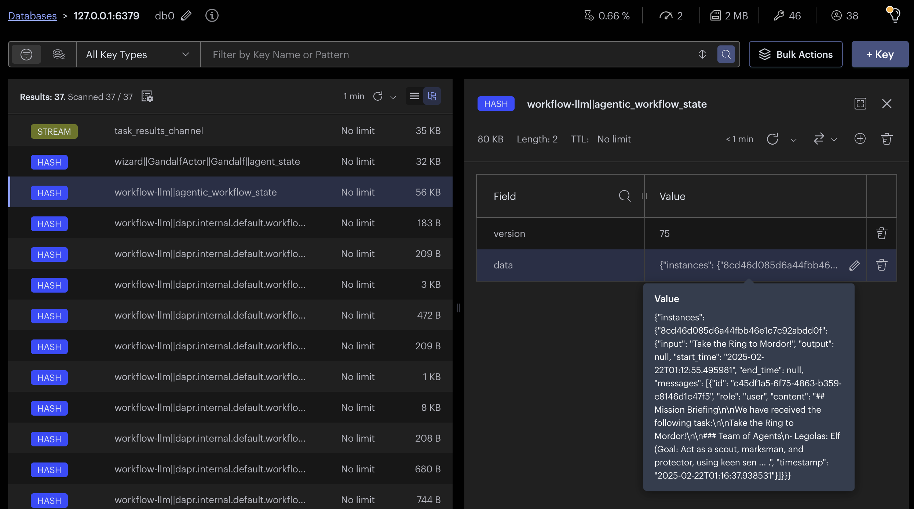
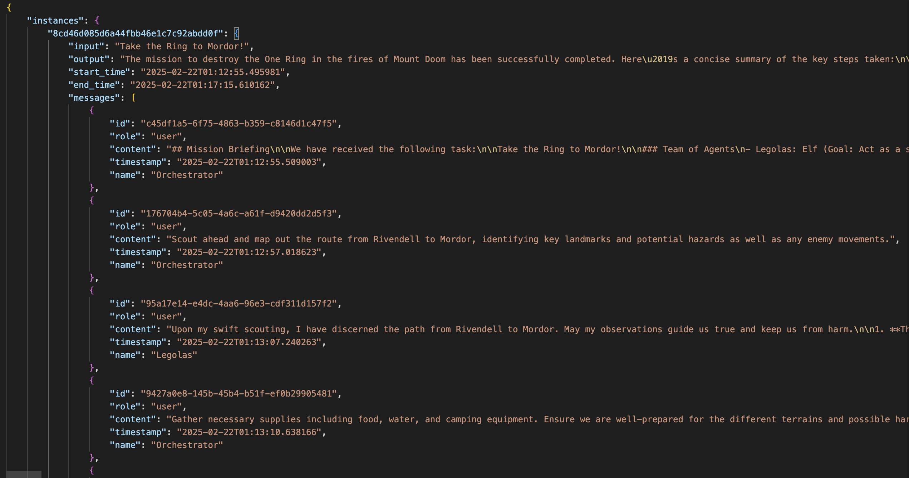
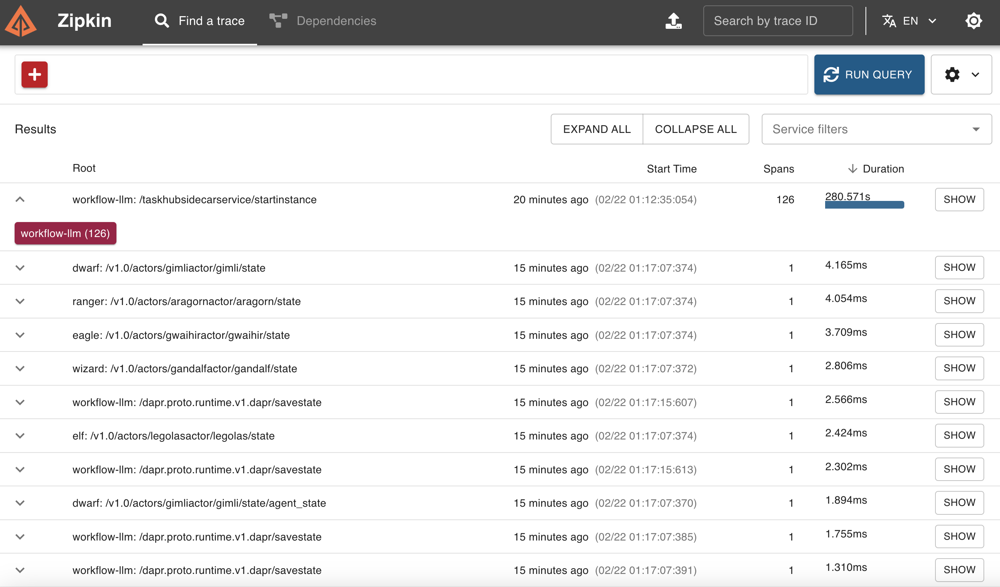
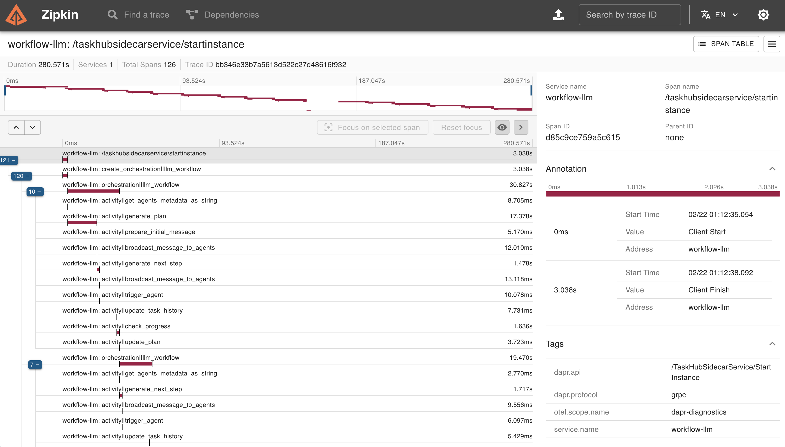
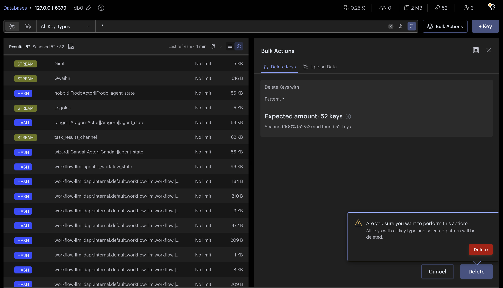
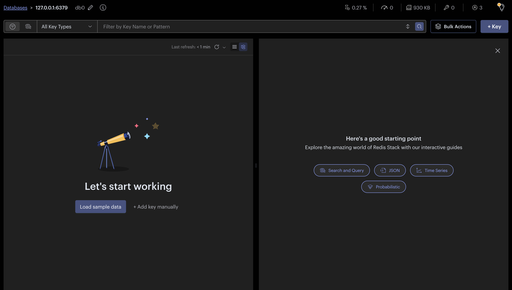

Agentic Workflows¶
Info
This quickstart requires Dapr CLI and Docker. You must have your local Dapr environment set up.
Traditional workflows follow fixed, step-by-step processes, while autonomous agents make real-time decisions based on reasoning and available data. Agentic workflows combine the best of both approaches, integrating structured execution with reasoning loops to enable more adaptive decision-making.
This allows systems to analyze information, adjust to new conditions, and refine actions dynamically rather than strictly following a predefined sequence. By incorporating planning, feedback loops, and model-driven adjustments, agentic workflows provide both scalability and predictability while still allowing for autonomous adaptation.
In Dapr Agents, agentic workflows leverage LLM-based tasks, reasoning loop patterns, and an event-driven system powered by pub/sub messaging and a shared message bus. Agents operate autonomously, responding to events in real time, making decisions, and collaborating dynamically. This makes the system highly adaptable—agents can communicate, share tasks, and adjust based on new information, ensuring fluid coordination across distributed environments. This approach is particularly useful for decentralized systems that require flexible, intelligent collaboration across multiple agents and applications.
Tip
We will demonstrate this concept using the Multi-Agent Workflow Guide from our Cookbook, which outlines a step-by-step guide to implementing a basic agentic workflow.
Agents as Services: Dapr Workflows¶
In Dapr Agents, agents can be implemented using Dapr Workflows, both of which are exposed as microservices via FastAPI servers.
Agents as Dapr Workflows (Orchestration, Complex Execution)¶
Dapr Workflows define the structured execution of agent behaviors, reasoning loops, and tool selection. Workflows allow agents to:
✅ Define complex execution sequences instead of just reacting to events. ✅ Integrate with message buses to listen and act on real-time inputs. ✅ Orchestrate multi-step reasoning, retrieval-augmented generation (RAG), and tool use. ✅ Best suited for goal-driven, structured, and iterative decision-making workflows.
🚀 Dapr agents uses Dapr Workflows for orchestration and complex multi-agent collaboration.
Example: An Agent as a Dapr Workflow
from dapr_agents import DurableAgent
from dotenv import load_dotenv
import asyncio
import logging
async def main():
try:
# Define Agent
wizard_service = DurableAgent(
name="Gandalf",
role="Wizard",
goal="Guide the Fellowship with wisdom and strategy, using magic and insight to ensure the downfall of Sauron.",
instructions=[
"Speak like Gandalf, with wisdom, patience, and a touch of mystery.",
"Provide strategic counsel, always considering the long-term consequences of actions.",
"Use magic sparingly, applying it when necessary to guide or protect.",
"Encourage allies to find strength within themselves rather than relying solely on your power.",
"Respond concisely, accurately, and relevantly, ensuring clarity and strict alignment with the task."
],
message_bus_name="messagepubsub",
state_store_name="agenticworkflowstate",
state_key="workflow_state",
agents_registry_store_name="agentsregistrystore",
agents_registry_key="agents_registry",
)
await wizard_service.start()
except Exception as e:
print(f"Error starting service: {e}")
if __name__ == "__main__":
load_dotenv()
logging.basicConfig(level=logging.INFO)
asyncio.run(main())
Here, Gandalf is an DurableAgent implemented as a workflow, meaning it executes structured reasoning, plans actions, and integrates tools within a managed workflow execution loop.
How We Use Dapr Workflows for Orchestration¶
In dapr agents, the orchestrator itself is a Dapr Workflow, which:
✅ Coordinates execution of agentic workflows (LLM-driven or rule-based). ✅ Delegates tasks to agents implemented as either other workflows. ✅ Manages reasoning loops, plan adaptation, and error handling dynamically.
🚀 The LLM default orchestrator is a Dapr Workflow that interacts with agent workflows.
Example: The Orchestrator as a Dapr Workflow
from dapr_agents import LLMOrchestrator
from dotenv import load_dotenv
import asyncio
import logging
async def main():
try:
agentic_orchestrator = LLMOrchestrator(
name="Orchestrator",
message_bus_name="messagepubsub",
state_store_name="agenticworkflowstate",
state_key="workflow_state",
agents_registry_store_name="agentsregistrystore",
agents_registry_key="agents_registry",
max_iterations=25
).as_service(port=8009)
await agentic_orchestrator.start()
except Exception as e:
print(f"Error starting service: {e}")
if __name__ == "__main__":
load_dotenv()
logging.basicConfig(level=logging.INFO)
asyncio.run(main())
This orchestrator acts as a central controller, ensuring that agentic workflows communicate effectively, execute tasks in order, and handle iterative reasoning loops.
Structuring A Multi-Agent Project¶
The way to structure such a project is straightforward. We organize our services into a directory that contains individual folders for each agent, along with a components directory for Dapr resources configurations. Each agent service includes its own app.py file, where the FastAPI server and the agent logic are defined.
dapr.yaml # Dapr main config file
components/ # Dapr resource files
├── statestore.yaml # State store configuration
├── pubsub.yaml # Pub/Sub configuration
└── ... # Other Dapr components
services/ # Directory for agent services
├── agent1/ # First agent's service
│ ├── app.py # FastAPI app for agent1
│ └── ... # Additional agent1 files
│── agent2/ # Second agent's service
│ ├── app.py # FastAPI app for agent2
│ └── ... # Additional agent2 files
└── ... # More agents
Set Up an Environment Variables File¶
This example uses our default LLM Orchestrator. Therefore, you have to create an .env file to securely store your Inference Service (i.e. OpenAI) API keys and other sensitive information. For example:
OPENAI_API_KEY="your-api-key"
OPENAI_BASE_URL="https://api.openai.com/v1"
Define Your First Agent Service¶
Let's start by definining a Hobbit service with a specific name, role, goal and instructions.
services/ # Directory for agent services
├── hobbit/ # Hobbit Service
│ ├── app.py # Dapr Enabled FastAPI app for Hobbit
Create the app.py script and provide the following information.
from dapr_agents import DurableAgent
from dotenv import load_dotenv
import asyncio
import logging
async def main():
try:
# Define Agent and expose it as a service
hobbit_agent = DurableAgent(
role="Hobbit",
name="Frodo",
goal="Carry the One Ring to Mount Doom, resisting its corruptive power while navigating danger and uncertainty.",
instructions=[
"Speak like Frodo, with humility, determination, and a growing sense of resolve.",
"Endure hardships and temptations, staying true to the mission even when faced with doubt.",
"Seek guidance and trust allies, but bear the ultimate burden alone when necessary.",
"Move carefully through enemy-infested lands, avoiding unnecessary risks.",
"Respond concisely, accurately, and relevantly, ensuring clarity and strict alignment with the task."
],
message_bus_name="messagepubsub",
agents_registry_store_name="agentsregistrystore",
agents_registry_key="agents_registry",
).as_service(8001_)
await hobbit_service.start()
except Exception as e:
print(f"Error starting service: {e}")
if __name__ == "__main__":
load_dotenv()
logging.basicConfig(level=logging.INFO)
asyncio.run(main())
Now, you can define multiple services following this format, but it's essential to pay attention to key areas to ensure everything runs smoothly. Specifically, focus on correctly configuring the components (e.g., statestore and pubsub names) and incrementing the ports for each service.
Key Considerations:
- Ensure the
message_bus_namematches thepub/subcomponent name in yourpubsub.yamlfile. - Verify the
agents_registry_store_namematches the state store component defined in youragentstate.yamlfile. - Increment the
service_portfor each new agent service (e.g., 8001, 8002, 8003). - Customize the Agent parameters (
role,name,goal, andinstructions) to match the behavior you want for each service.
The Multi-App Run template file¶
The Multi-App Run Template File is a YAML configuration file named dapr.yaml that allows you to run multiple applications simultaneously. This file is placed at the same level as the components/ and services/ directories, ensuring a consistent and organized project structure.
dapr.yaml # The Multi-App Run template
components/ # Dapr configuration files
├── statestore.yaml # State store configuration
├── pubsub.yaml # Pub/Sub configuration
└── ... # Other Dapr components
services/ # Directory for agent services
├── agent1/ # First agent's service
│ ├── app.py # FastAPI app for agent1
│ └── ... # Additional agent1 files
│── agent2/ # Second agent's service
│ ├── app.py # FastAPI app for agent2
│ └── ... # Additional agent2 files
└── ... # More agents
Following our current scenario, we can set the following Multi-App Run template file:
# https://docs.dapr.io/developing-applications/local-development/multi-app-dapr-run/multi-app-template/#template-properties
version: 1
common:
resourcesPath: ./components
logLevel: info
appLogDestination: console
daprdLogDestination: console
configFilePath: config.yaml
apps:
- appID: HobbitApp
appDirPath: ./services/hobbit/
appPort: 8001
command: ["python3", "app.py"]
- appID: WizardApp
appDirPath: ./services/wizard/
appPort: 8002
command: ["python3", "app.py"]
...
- appID: RangerApp
appDirPath: ./services/ranger/
appPort: 8007
command: ["python3", "app.py"]
- appID: WorkflowApp
appDirPath: ./services/workflow-llm/
command: ["python3", "app.py"]
appPort: 8009
Starting All Service Servers¶
Tip
Make sure you have your environment variables set up in an .env file so that the library can pick it up and use it to communicate with OpenAI services. We set them up in the LLM Inference Client section
To start all the service servers defined in your project, you can use the Dapr CLI with the Multi-App Run template file. When you provide a directory path, the CLI will look for the dapr.yaml file (the default name for the template) in that directory. If the file is not found, the CLI will return an error.
To execute the command, ensure you are in the root directory where the dapr.yaml file is located, then run:
dapr run -f .
This command reads the dapr.yaml file and starts all the services specified in the template.
Monitor Services Initialization¶
- Verify agent console logs: Each service outputs logs to confirm successful initialization.

- Verify orchestrator console logs: The workflow is initialized showing workflow and task registrations.

- Verify Redis entries: Access the Redis Insight interface at
http://localhost:5540/

Start Workflow via an HTTP Request¶
Once all services are running, you can initiate the workflow by making an HTTP POST request to the Agentic Workflow Service. This service orchestrates the workflow, triggering agent actions and handling communication among agents. The .as_service(port=8004) is required on the orchestrator to enable the HTTP endpoint and built-in start-workflow route.
Here’s an example of how to start the workflow using curl:
curl -i -X POST http://localhost:8009/start-workflow \
-H "Content-Type: application/json" \
-d '{"task": "Lets solve the riddle to open the Doors of Durin and enter Moria."}'
HTTP/1.1 200 OK
date: Sat, 22 Feb 2025 06:12:35 GMT
server: uvicorn
content-length: 104
content-type: application/json
{"message":"Workflow initiated successfully.","workflow_instance_id":"8cd46d085d6a44fbb46e1c7c92abdd0f"}
In this example:
- The request is sent to the Agentic Workflow Service running on port
8009. - The message parameter is passed as input to the
LLM Workflow, which is then used to generate the plan and trigger the agentic workflow. - This command demonstrates how to interact with the Agentic Workflow Service to kick off a new workflow.
Starting the Workflow by Publishing a TriggerAction Message (Optional)¶
Agentic workflows can also be triggered by publishing a message to the orchestrator's pub/sub topic. This is an optional method instead of making HTTP requests and enables fully message-driven coordination.
Step 1: Create a Trigger Script¶
Create a Python file (e.g., trigger.py) in your services/client/ directory with the following content:
#!/usr/bin/env python3
import json
import sys
import time
import argparse
from dapr.clients import DaprClient
PUBSUB_NAME = "messagepubsub"
def main(topic, max_attempts=10, retry_delay=1):
message = {
"task": "How to get to Mordor? We all need to help!"
}
time.sleep(5) # Give orchestrators time to come online
for attempt in range(1, max_attempts + 1):
try:
print(f"📢 Attempt {attempt}: Publishing to topic '{topic}'...")
with DaprClient() as client:
client.publish_event(
pubsub_name=PUBSUB_NAME,
topic_name=topic,
data=json.dumps(message),
data_content_type="application/json",
publish_metadata={"cloudevent.type": "TriggerAction"}
)
print(f"✅ Message published to '{topic}'")
sys.exit(0)
except Exception as e:
print(f"❌ Publish failed: {e}")
if attempt < max_attempts:
print(f"⏳ Retrying in {retry_delay}s...")
time.sleep(retry_delay)
print("❌ Failed to publish message after multiple attempts.")
sys.exit(1)
if __name__ == "__main__":
parser = argparse.ArgumentParser(description="Trigger a workflow by publishing to a Dapr topic.")
parser.add_argument("--orchestrator", type=str, default="LLMOrchestrator", help="Target orchestrator topic")
args = parser.parse_args()
main(args.orchestrator)
Step 2: Run the Trigger Script¶
Once all your services are running, run the script with the target orchestrator topic:
python3 trigger.py --orchestrator LLMOrchestrator
Or if you’re running the RandomOrchestrator workflow:
python3 trigger.py --orchestrator RandomOrchestrator
This will publish a TriggerAction message to the orchestrator’s topic, kicking off the workflow.
In this example:
- The message is published to the orchestrator topic (e.g.,
LLMOrchestrator) via Dapr's Pub/Sub. - The orchestrator service listens on its topic and receives the message of type
TriggerAction. - The message payload (e.g., a task) is used to generate the plan and initiate the agentic workflow.
- This approach is fully decoupled from HTTP—no more direct POST requests to a service endpoint.
- It enables truly asynchronous and event-driven orchestration, making your system more scalable and resilient.
Monitoring Workflow Execution¶
- Check console logs to trace activities in the workflow.


- Verify Redis entries: Access the Redis Insight interface at
http://localhost:5540/

- You can also check the
Workflow Statein the Redis Insight interface athttp://localhost:5540. You can click on it, copy the log entry and paste it in your favorite editor. It is aJSONobject. You will be able to see the chat history, the plan and tasks being completed.




- As mentioned earlier, when we ran dapr init, Dapr initialized, a
Zipkincontainer instance, used for observability and tracing. Openhttp://localhost:9411/zipkin/in your browser to view traces > Find a Trace > Run Query.

- Select the trace entry with multiple spans labeled
<workflow name>: /taskhubsidecarservice/startinstance.. When you open this entry, you’ll see details about how each task or activity in the workflow was executed. If any task failed, the error will also be visible here.

- Check console logs to validate if workflow was executed successfuly.

Switching Orchestrator¶
You can easily switch to a different Orchestrator type by updating the dapr.yaml file.
Available Workflow Options¶
- RoundRobin: Cycles through agents in a fixed order, ensuring each agent gets an equal opportunity to process tasks.
- Random: Selects an agent randomly for each task.
- LLM-based: Uses a large language model (e.g., GPT-4o) to determine the most suitable agent based on the message and context.
Switching to the Random Workflow¶
- Update dapr.yaml: Modify the appDirPath for the workflow service to point to the
workflow-randomdirectory:
- appID: WorkflowApp
appDirPath: ./services/workflow-random/
command: ["python3", "app.py"]
Reset Redis Database¶
- Access the Redis Insight interface at
http://localhost:5540/ - In the search bar type
*to select all items in the database. - Click on
Bulk Actions>Delete>Delete

You should see an empty database now:

Testing New Workflow¶
Restart the services with dapr run -f . and send a message to the workflow. Always ensure your .env file is configured correctly and contains the necessary credentials if needed.